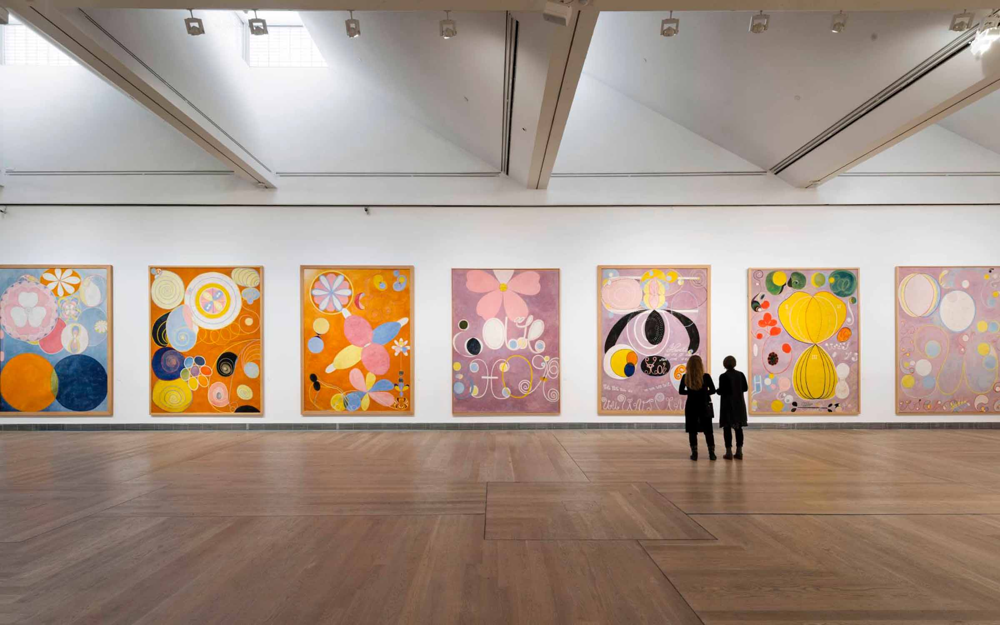
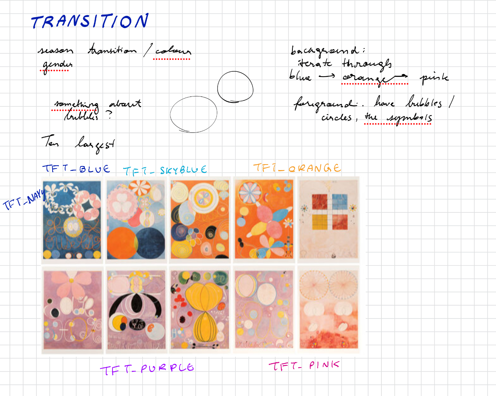
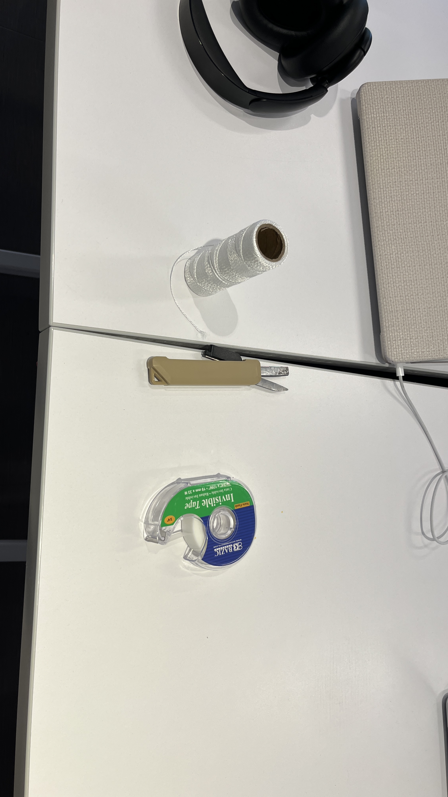
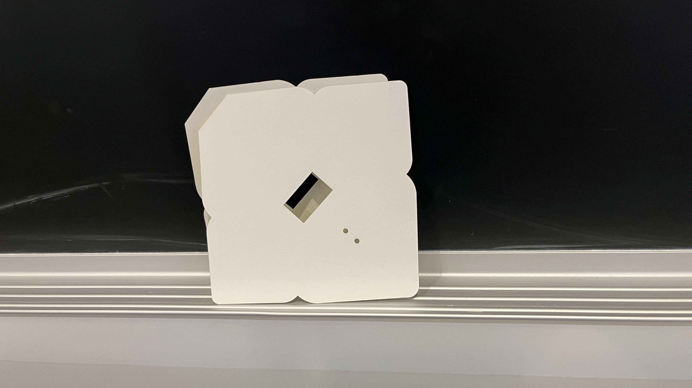
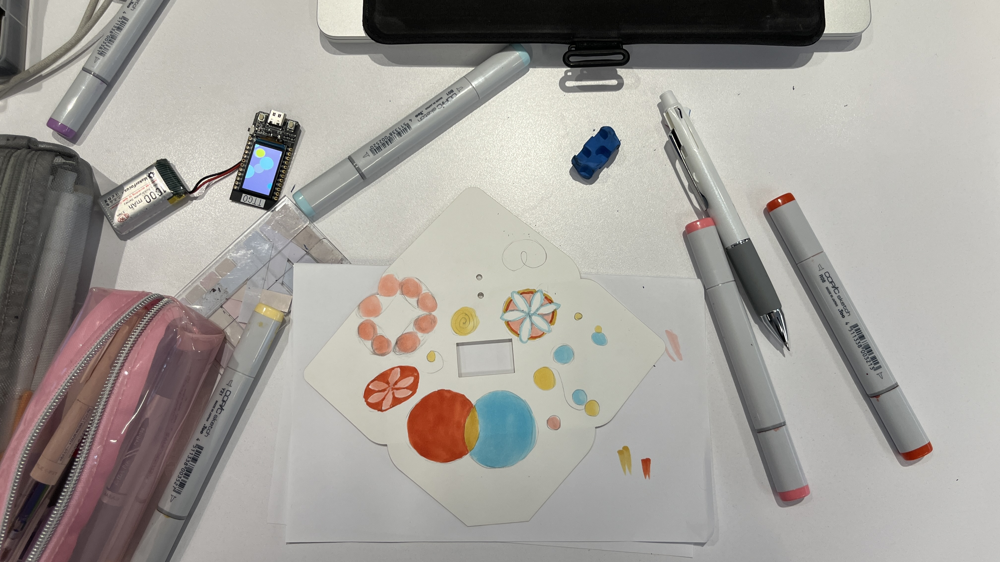
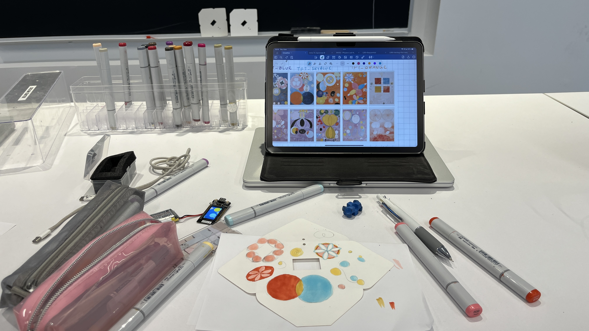
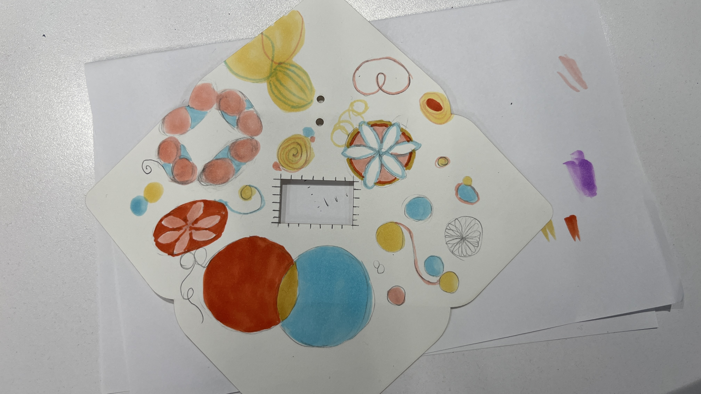
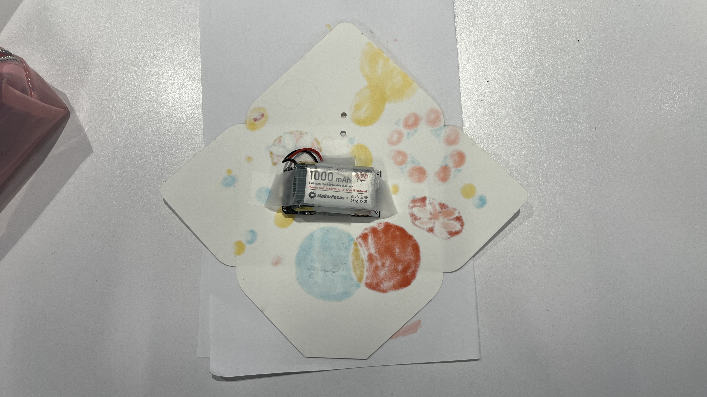

Generative Art
For Module 1, the theme of the project was transitions. Initially, I had thought of the seasonal changes and the transition between different periods of life, but the collective brainstorm session in class inspired me to also think about colour gradients.
Lately, I have been quite interested in the work of Swedish pioneering artist Hilma af Klint (1862–1944). Now considered to be among the first to explore Abstraction within Western art history, she drew from spiritualism in her artistic practice and often explored diagrams to reflect upon human nature and the world of the soul. One of her most famous works is the series The Ten Largest, which was the focal point of my project.
Dating back to 1907 and completed in just 40 days, the work is a collection of gigantic paintings (3.28m × 2.40m) that celebrates the journey across the four ages of humanity: Childhood, Youth, Adulthood, and Old Age. Based on a notion of evolution, as present in most of her art, they are focused on an evolution on a spiritual plane, rather than physical developments.

The Ten Largest, Hilma af Klint. Photography: Åsa Lundén / Moderna Museet
My intent with my project was to consider transition paying homage to The Ten Largest. As the foreground element, I decided to have bubbles floating up the screen. Referencing the many spherical shapes present in the paintings, but also it was the shape that most embodied outerworldness to me (the images of soap bubbles came often to mind). The background colours, drawn from the series, transition into the next illustrating the shift into different periods of life.
To attempt to execute my vision, I initially experimented with the default colours available in the TFT_eSPI.h library, which had been used in the example codes. An initial obstacle was finding a way to see through them in the actual display, which I conquered by writing a small program to go through all of them in a loop. To my delight, I was able to find satisfying matches (TFT_NAVY, TFT_BLUE, TFT_SKYBLUE, TFT_ORANGE, TFT_PURPLE, TFT_PINK, TFT_RED).

Initial planning and brainstormings
Then, I worked on getting these colours to transition into one another in a gradient manner. If I had just coded to switch the colour, there was no transition; it was a direct change. Looking at what was available for the TFT library, I found alphaBlend() useful to provide me with intermediate colours to fill the screen.
An issue that I faced was getting the bubbles to behave as I desired, which is why I also settled on only having one shape rather than trying to recreate more of the patterns present in the paintings. Through them, I implemented the generative aspect of the assignment by making them spawn at random colours, floating speeds, intervals and amounts. Initially, they kept flickering and did not have a smooth animation, so I had assistance from Gemini in order to fix this issue, such that I had to use a sprite (for double buffering). The problem with my original method was that there were too many things (backgrounds, bubbles, etc) for the screen to update at once, so a sprite was used so that the frame was first completed in the buffer to then be displayed on the screen.
The time period for each of the colour transitions was determined by the amount of paintings each one had (for example, there are four with purple backgrounds, so this colour had the largest screen time). Additionally, I added a red background last, which is not present in the series, but I thought it made for a better gradient transition and it was also chosen to represent the spiritual, transcendental love as present in her Evolution series (1908).
For the Display Installation, the following materials were used:
- ESP32 TTGO T-display
- Lipo battery
- Alcohol Markers
- Envelope
- String
- Bamboo Stick
- Tape


Materials used for the display installation.
Since I was unable to include other elements of the series, besides the spheres, in my display, I drew them on the envelope that encased the microcontroller using my mechanical pencil and alcohol markers. To power the ESP32, a Lipo battery was attached, which allowed it to work for about a day. Wiring a string through the holes perforated on the envelope (about a 4 feet long) and attaching the other end to a bamboo stick, the project was hung in the Computational Science Center social space.




Envelope process
The code is available here: GitHub Repo
Final Installation Display Video
References
- MoMA – Hilma af Klint
- Hilma af Klint Official Website
- Moderna Museet – Hilma af Klint: The Ten Largest
- Grand Palais – Hilma af Klint's Paintings for the Temple
- Guggenheim – Group VI, Evolution, No. 15 (1908) Audio Guide
- TFT_eSPI Documentation – Colors
- Golden Morning LCD – Alpha Blending in TFT Displays